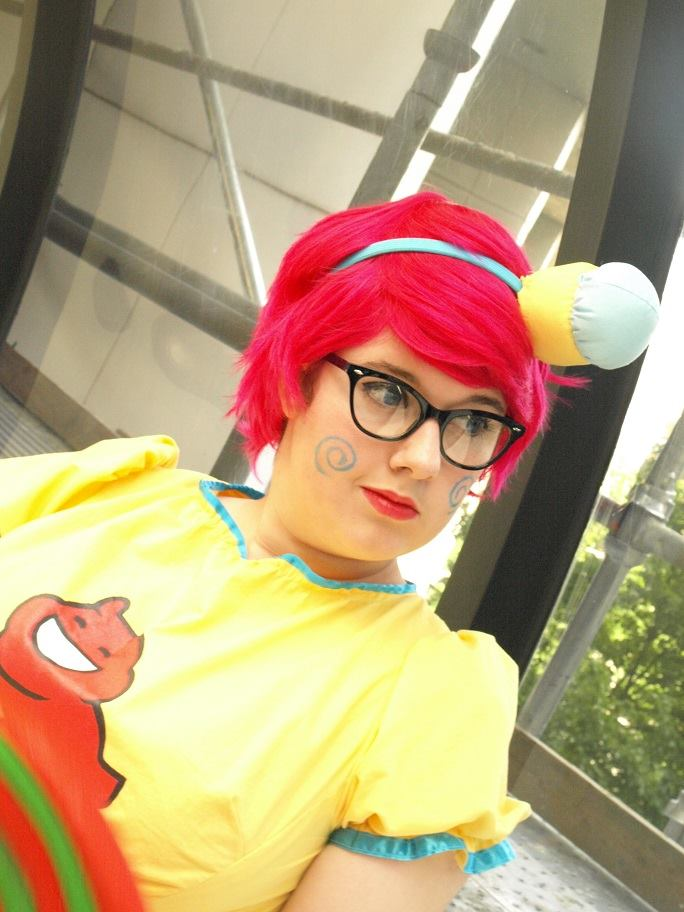

Emma Hargrave is a third year student at Georgia Tech. She is enjoying her choice in major of Computational Media with a focus in Film and looks forward to furthering her education at the college.
Emma plans on graduating from Georgia Tech in 2016 and pursuing higher education in California after her graduation. She plans on obtaining a Master's degree in Directing and two Associates degrees in Business and Electrical Engineering.
Emma's interests include cosplay, film making, and both playing and making video games.
Cosplay is a word that comes from the combination of the two words "costume" and "play." The hobby involves crafting costumes and props based off of characters from video games, television, and movies. This hobby has provided Emma with a strong basis for many skills, including a general knowledge of Electrical Engineering, sewing, and woodworking.
As soon as Emma found out about the Computational Media degree at Georgia Tech, she has not faltered in her love for the school. She has enjoyed all of her classes and has made great friends at the school and is looking forward to her future years at the school.
Emma plans on graduating from Georgia Tech in 2016 and pursuing higher education in California after her graduation. She plans on obtaining a Master's degree in Directing and two Associates degrees in Business and Electrical Engineering.
Emma's interests include cosplay, film making, and both playing and making video games.
Cosplay is a word that comes from the combination of the two words "costume" and "play." The hobby involves crafting costumes and props based off of characters from video games, television, and movies. This hobby has provided Emma with a strong basis for many skills, including a general knowledge of Electrical Engineering, sewing, and woodworking.
As soon as Emma found out about the Computational Media degree at Georgia Tech, she has not faltered in her love for the school. She has enjoyed all of her classes and has made great friends at the school and is looking forward to her future years at the school.